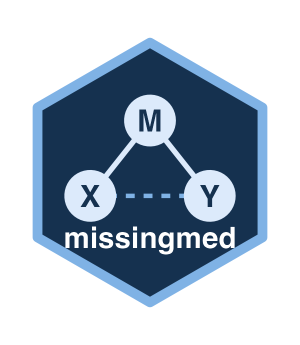

Pooled SEM Analysis Results Class
Source:R/PooledSEMResults.R
PooledSEMResults-class.RdAn S4 class to represent pooled results from SEM analysis across multiple imputations or datasets. It contains pooled estimates, standard errors, test statistics, p-values, and confidence intervals for each parameter estimated across multiple imputations.
Slots
tidy_tabledata.frame A data frame containing the pooled results of the SEM analyses. The column names adhere to tidy conventions and include the following columns:
term: The name of the parameter being estimated.estimate: The pooled estimate of the parameter.std_error: The pooled standard error of the estimate.p_value: The pooled p-value for the test statistic.conf_low: The lower bound of the confidence interval for the estimate.conf_high: The upper bound of the confidence interval for the estimate.
cov_totalmatrix The pooled total covariance matrix of the parameter estimates.
cov_betweenmatrix The pooled between-imputation covariance matrix of the parameter estimates.
cov_withinmatrix The pooled within-imputation covariance matrix of the parameter estimates.
methodcharacter The method used for SEM analysis ('lavaan' or 'OpenMx').
conf_intlogical Whether to calculate confidence intervals for the pooled estimates. default is
FALSE.conf_levelnumeric The confidence level used in the interval calculation. default is
0.95.
Author
Davood Tofighi dtofighi@gmail.com